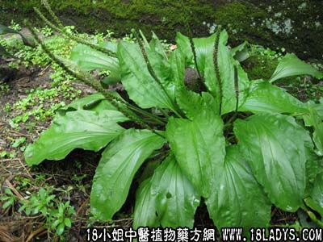

(本文解释权归中药材天地网兄弟站-18小姐中医植物药方网所有,如需转载请注明出处)
车前草(中药材植物名:车前)(植物科目:车前科)

别名：田贯草、钱串草、钱贯草。
植物名：车前。
生长环境：本品为多年生草木。为极常见的野草，喜生与湿润的草地上、住宅附近或菜地、田基上等。
分布：广东全省均有，我过到处皆可见。
入药部分：全草。
采集期：夏、秋。
自采地点：家种，菜园及郊野、夜色灰姑娘野生。
性味：性凉、味淡。
功能：清热去湿、利水通淋。
主治、用量和用法：①小便刺痛，淋浊、白浊、配伍用的；②疝气：用1至2两，加猪小肚，清水煎服。
验方：（治淋浊方）甘车前草1两、塘边藕5钱、海金沙5钱、白石笋5钱、刘寄奴5钱、金针头5钱，清水四碗，煎成一碗，温服。
（方解）本方车前草长于利尿，塘边藕利尿解毒，海金沙利尿清热，白石笋泻利水湿，刘寄奴活血，金针头利水通淋，合为清热解毒利尿之剂、治淋浊有效。
（方歌）治疗淋浊车前草，海金沙与刘寄奴，金针塘藕白石笋，解热通淋效力高。
参考资料：《广州市中医验方远集》德成卫生所介绍：治小便下血验方：车前草5钱，旱早莲1两，煎服。
(本文解释权归中药材天地网兄弟站-18小姐中医植物药方网所有,如需转载请注明出处)